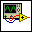
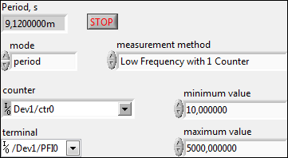
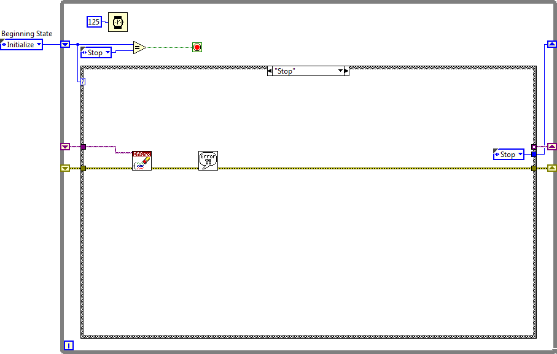
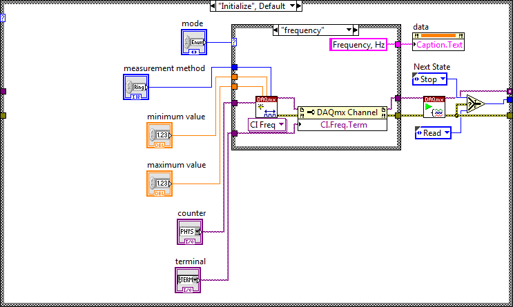
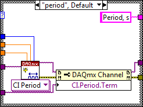
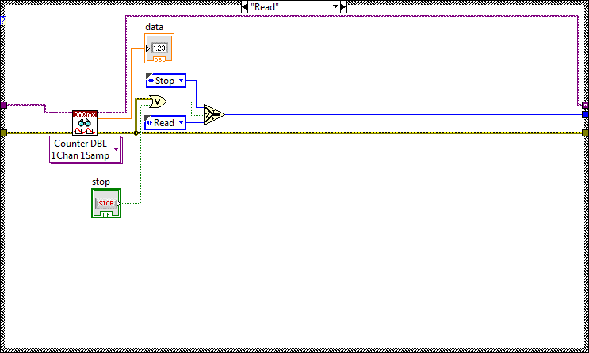

Use this template to build a standard state machine design pattern. Each state executes code and determines which state to transition to. Contrast this design pattern with the User Interface Event Handler pattern, in which code executes in response to user actions. Contrast this design pattern also with the Queued Message Handler pattern, in which each message handling code can queue zero or more new messages.
Note: This template does not contain the most recent programming guidelines recommended by National Instruments. For a complete, project-based implementation of the Standard State Machine pattern, use the Create Project dialog box instead of this template.





